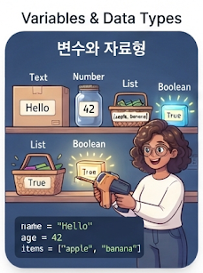
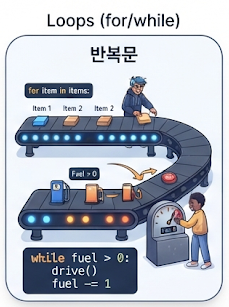
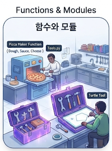

10 minute python starter
생각을
코드로 움직여요.
파이썬을 처음 만나는 당신을 위한 짧은 여정. 한 줄씩 읽고, 직접 소리 내어 따라가 봐요.
개념 6분 · 퀴즈 2분 · 정리 2분
영상·음악·내레이션은 각각 재생 버튼으로 조절할 수 있어요.
생각 → 코드▶ 코드 루프 영상 자리
# 반복 작업은 컴퓨터에게
for idea in ideas:
make(idea)
"작은 시작!"
표지 그림 1 · 코드 루프 영상:
media/code-loop.mp4 · BGM: media/bgm.mp301 / 변수 · 1분 30초
값에 이름표를
붙여 두어요.
한 줄 설명 · 12자변수는 값을 담는 이름표예요.
변수는 값에 붙이는 이름표예요. 이름표를 붙여 두면, 필요할 때 그 값으로 다시 돌아올 수 있어요.
읽기가 끝나면 다음 화면으로 이동해요.
예시 코드 · 직접 바꿔 보세요실행 전
값을 바꾸고 결과를 확인해요.
결과가 여기에 나타납니다.
내레이션 1 · 그림 2: 값을 담은 상자와 이름표
그림 2 / 이름표가 붙은 상자

값을 다시 꺼내 쓰는 상상02 / 반복 for · 1분 30초
같은 일은
대신 맡겨요.
한 줄 설명 · 15자for는 같은 일을 반복해요.
같은 일을 여러 번 해야 한다면, for 반복문으로 대신 시킬 수 있어요. 컴퓨터가 목록을 차례로 처리합니다.
읽기가 끝나면 다음 화면으로 이동해요.
예시 코드 · 직접 바꿔 보세요실행 전
목록에 과일을 더해 보세요.
결과가 여기에 나타납니다.
내레이션 2 · 그림 3: 데이터가 순서대로 지나가는 길
그림 3 / 하나씩, 차례대로

한 번 만든 규칙을 목록 전체에03 / 함수 · 1분 30초
자주 쓰는 일에
이름을 붙여요.
한 줄 설명 · 17자함수는 다시 쓸 일을 묶어요.
함수는 여러 명령을 한 덩어리로 묶고 이름을 붙이는 방법이에요. 필요할 때 이름을 불러 다시 쓸 수 있어요.
읽기가 끝나면 다음 화면으로 이동해요.
예시 코드 · 직접 바꿔 보세요실행 전
이름을 바꾸거나 호출을 더해 보세요.
결과가 여기에 나타납니다.
내레이션 3 · 그림 4: 이름표가 붙은 도구 상자
그림 4 / 필요할 때 꺼내는 도구

방법을 묶어 이름으로 부르기04 / 직접 해보기 · 2분
코드를 고쳐 보고, 퀴즈도 풀어봐요.
코드 결과를 확인한 뒤 아래 두 문제에 답해 보세요. 채점하면 정리 화면이 열립니다.
직접 코드 고쳐 실행하기파이썬 실행 환경 준비 전
main.py · 코드를 자유롭게 수정하세요
실행 결과
실행 버튼을 누르면 브라우저에서 파이썬을 준비합니다. 첫 실행은 조금 걸릴 수 있어요.
수정한 코드는 이 브라우저에서 실행됩니다.
같은 동작을 목록의 모든 항목에 하려면?
두 문제를 풀고 채점하면 정리 화면이 열려요.
05 / 오늘의 정리
이제 시작할
준비가 됐어요.
01변수에 값과 이름을 담아요.
02for로 반복 작업을 줄여요.
03함수로 코드를 묶어 다시 써요.
다음 질문: 내 전공에서 어떤 반복 작업을 코드로 줄일 수 있을까요?
코랩에서 해보기 ↗